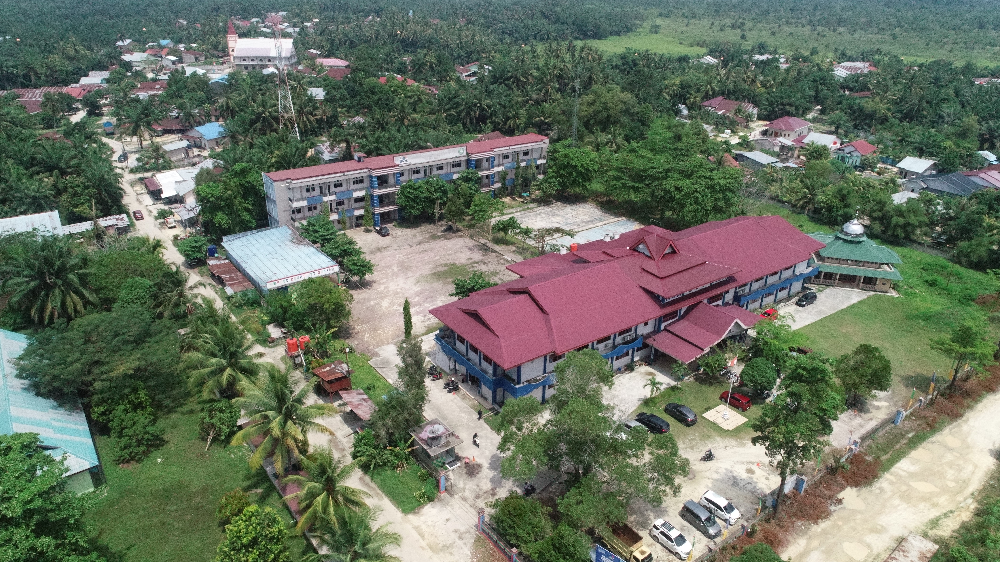

1985 — ATMI Dumai Dibentuk
YLPI Dumai mendirikan Akademi Teknik Manajemen Industri (ATMI) Dumai untuk mendukung kebutuhan industri lokal dengan jurusan Teknik Industri dan Manajemen Industri.
SK
0348/O/1987 tanggal 20 Juni 1987.
Perjalanan institusi dari ATMI Dumai pada 1985 sampai menjadi Institut Teknologi dan Bisnis Riau Pesisir pada 2025 dirangkai dengan informasi resmi, izin program, dan perkembangan kelembagaan yang akurat.
Didirikan
1985
ATMI Dumai oleh YLPI Dumai.
Legalitas
1987
SK Mendikbud 0348/O/1987.
Rebranding
2025
Institut Teknologi dan Bisnis Riau Pesisir.

Cerita ini menempatkan dokumen penting, perubahan bentuk, dan izin program sebagai pondasi kepercayaan bagi pengunjung.
Lihat narasi resmiPerjalanan institusi dicatat melalui akta, izin operasional, serta keputusan kementerian. Halaman ini menggabungkan fakta hukum dan langkah perkembangan kampus dalam narasi yang mudah diikuti.
YLPI Dumai mendirikan Akademi Teknik Manajemen Industri (ATMI) Dumai untuk mendukung kebutuhan industri lokal dengan jurusan Teknik Industri dan Manajemen Industri.
SK
0348/O/1987 tanggal 20 Juni 1987.
ATMI bertransformasi menjadi Sekolah Tinggi Teknologi Dumai, memperluas misi pendidikan tinggi teknik dengan akreditasi yang sah.
Program Studi
Teknik Industri S1, Teknik Informatika S1, Teknik Kimia S1.
Rebranding resmi kampus sebagai Institut Teknologi dan Bisnis Riau Pesisir memperkuat posisi sebagai pusat pendidikan teknologi dan bisnis digital regional.
Timeline
Pilih milestone untuk melihat detail dokumen, tahun, dan perkembangan penting secara langsung.
Pilih milestone untuk melihat detail sejarah.
Timeline interaktif akan menampilkan dokumen resmi dan highlight setiap fase saat kamu mengeklik salah satu tombol di bawah.